PrivaDiaryは、日々の記録と、大切な人とのやり取りをひとつにまとめた個人向けの手帳アプリです。 書く、残す、伝える。その3つを、ひとつの画面で。
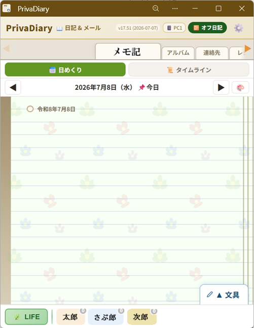
画面下の「LIFE」タブから、日記帳・アルバム・連絡先・レシピ・スケジュールなど、暮らしにまつわる機能をひとつずつ呼び出せます。 タブは ◀ ／ ▶ で左右に切り替えるだけ。迷わず行き来できます。
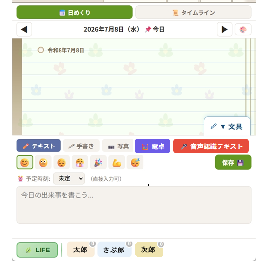
＊「オフライン日記帳」を使えば、電波の入らない場所でも同じ感覚で記帳できます。あとで通信が戻れば内容はそのまま残ります。
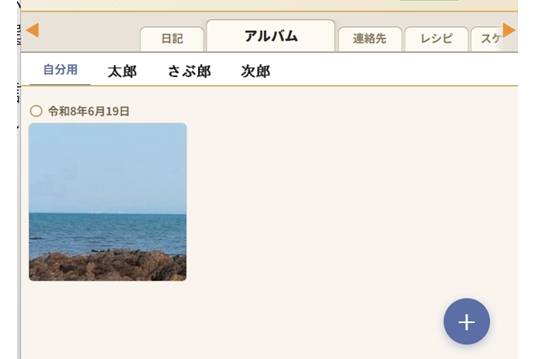
日々の細かな管理も、LIFEモードの中でひとつずつ完結します。
氏名・電話番号・メールアドレス・メモを記録。電話番号はタップするとそのまま発信できます。
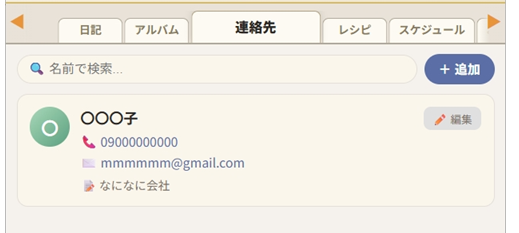
登録した連絡先は、あとからいつでも編集・整理できます。
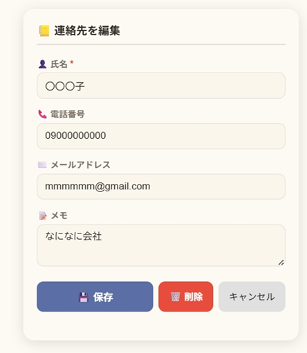
気になるホームページをブックマークのように保存しておけます。
アプリを開いた場所を自動で記録し、行動記録や不正アクセスの確認にも使えます。
運営からのお知らせを、通常・重要・緊急の3段階で受け取れます。緊急時はポップアップでもお知らせします。
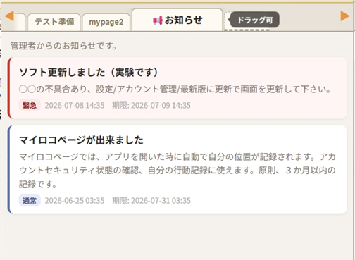
用途に合わせて、自分だけのメモページを自由に追加できます。
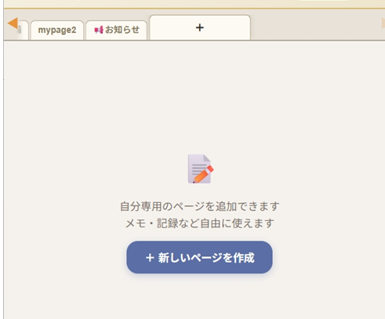
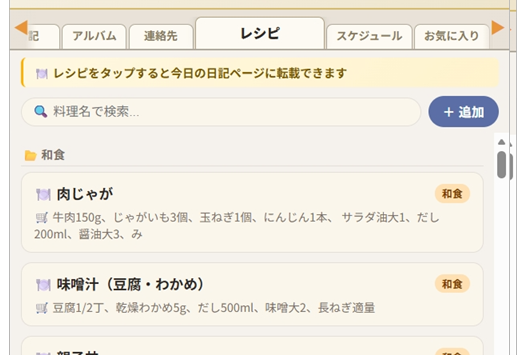
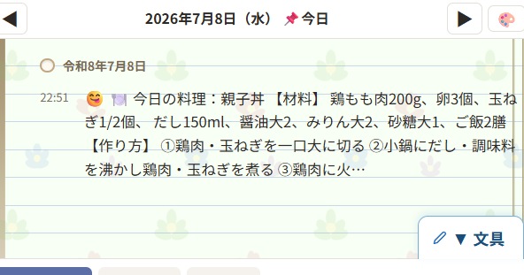
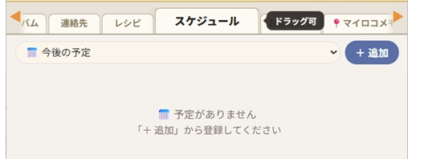
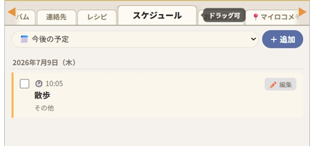
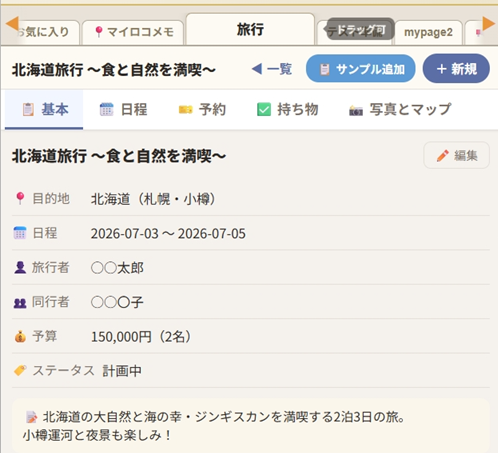
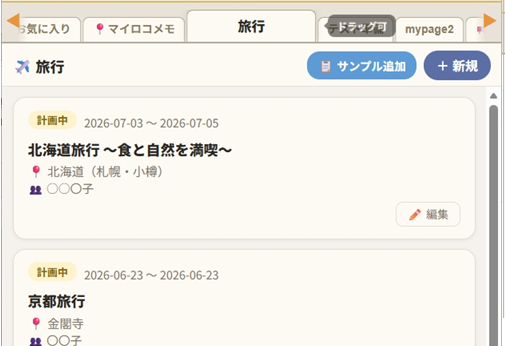
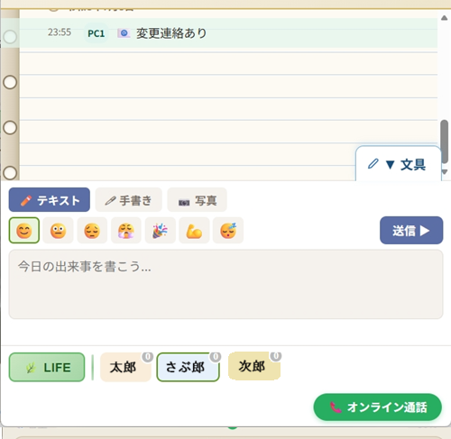
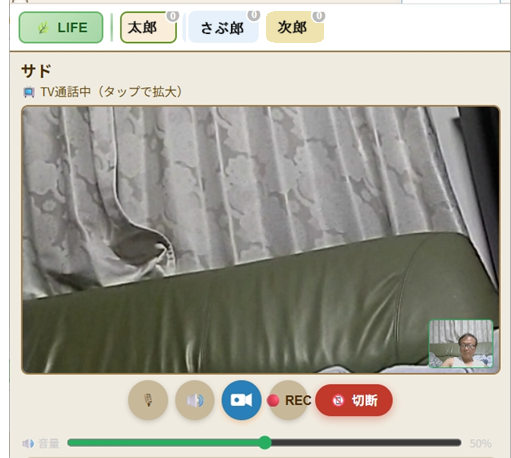
＊オンライン通話は、相手がオンライン中のときのみ呼び出せます。